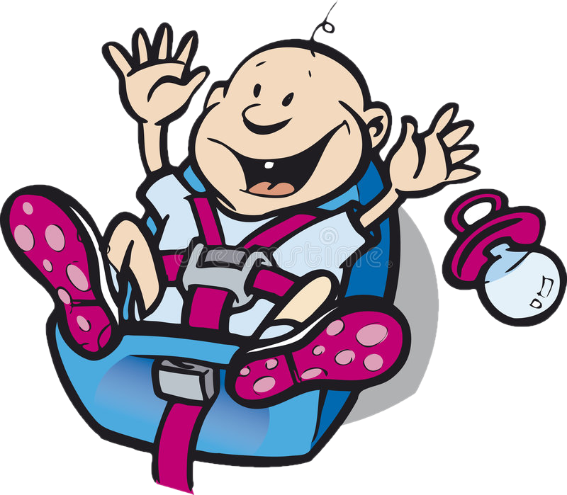

Автокресло группа 3 (22-36 кг) Siger Мякиш Плюс
Описание товара:

- Группа: 3 (22-36 кг)
- Крепление: автомобильные ремни
- Установка: лицом вперед
- Вес: 1.6 кг
-
Купить
Характеристики товара:
| Цвет | Крепление | Цена | Наличие на складе |
|
| При доставке | При самовывозе | |||
| Красный | Ремни | 2 500 | 2 600 | 2 |
| Isofix | 2 800 | 2 900 | 3 | |
| Коричневый | Ремни | 2 500 | 2 600 | 6 |
| Isofix | 2 800 | 2 900 | 7 | |
| Зеленый | Ремни | 2 500 | 2 600 | 3 |
| Isofix | 2 800 | 2 900 | 5 | |
Автокресло Siger Мякиш Плюс группа 3 предназначено для детей весом от 22 до 36 кг. Модель оснащена сидением ортопедической формы с усиленным каркасом и удобными подлокотниками. Изделие изготовлено экструзионно-выдувным способом. Чехол сшит из прочной, износостойкой ткани, легко снимается для чистки или стирки. Ребёнку в возрасте от 6 лет уже не очень удобно сидеть в машине в автокресле со спинкой, поэтому данная конструкция обеспечит максимальный комфорт малышу в поездке.